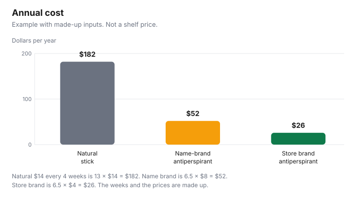

Personal Care · Canada
Deodorant and Antiperspirant Costs: Natural vs Regular vs Store Brand
A “natural” stick can cost more at the till than a store-brand antiperspirant and still be the one you want. The mistake is treating that gap as a fact about Canada, or treating the cheap stick as the same product. This page separates three things: what deodorant and antiperspirant are in Health Canada’s system, what a day of use costs once you count how long a stick lasts, and what a natural or organic claim is allowed to mean. No shelf price is quoted. The annual dollars below are an example with made-up inputs. This is not medical advice, and it does not rank a brand.
Key takeaways
- Deodorant is named as a cosmetic grooming aid. A therapeutic claim needs a DIN or an NPN. Health Canada’s Drug Product Database lists antiperspirants with drug identification numbers. Read the status on the record for your product.
- Cost per day is the price divided by the days you actually get. Cost per year is that figure times the days you use it.
- Example with made-up inputs: $14 every 4 weeks is $182 a year. $8 every 8 weeks is $52. $4 every 8 weeks is $26.
- Health Canada defines organic, fragrance-free, and hypoallergenic on its advertising page. That marketing-terms list does not define “natural.”
- Personal deodorants and antiperspirants are tariff item 3307.20.00. That item does not appear in the surtax order checked 29 Sep 2026. Whether your stick is classified under 3307.20.00: check with CBSA (1-800-461-9999) or your carrier.
Antiperspirant vs deodorant
Health Canada’s “what is a cosmetic” page says a cosmetic is any substance used to clean, improve, or change the complexion, skin, hair, nails, or teeth, and it names deodorant among grooming aids, with soap, shampoo, and shaving cream. The same page says a product can be classified as a drug instead, depending on ingredients and claims. A claim that indicates the product will modify a body function, or prevent or treat a disease, is a therapeutic claim. The advertising page says you should doubt a therapeutic claim on a label with no DIN or NPN, because those claims are for drugs and natural health products, not cosmetics.
Sweat control is the usual reason an antiperspirant is filed as a drug. It is not a reason to assume every stick that says antiperspirant has a number, and it is not a reason to assume a deodorant has none. Read the package. Health Canada’s Drug Product Database, checked 29 Sep 2026, lets you search by product name, and it lists antiperspirants with drug identification numbers. Each product record shows a status such as marketed, dormant, or cancelled. Open the record for the number on your stick and read that status before you treat the database as a shopping list. This guide does not name any of those products as picks. A deodorant that does not use the word antiperspirant will not show up in a search for that word. If your package prints an NPN instead, use the Licensed Natural Health Products Database and read both the licence status and the market-status note.
| What you are holding | Where it usually sits | What to do |
|---|---|---|
| Deodorant with no DIN or NPN | Named as a cosmetic grooming aid, if the claims stay cosmetic | Read the INCI list and the bilingual identity. Doubt a treatment claim with no number |
| Package with a DIN | Drug Product Database | Search the number. Read the status. Do not assume marketed |
| Package with an NPN | Licensed Natural Health Products Database | Read licence status. Market status is voluntary |
| Word “antiperspirant” on the front | Many are listed with a DIN in Health Canada’s Drug Product Database | Not every product carries one. Check your package |
Cost per week
Weigh the decision in days, then scale it. Finish one stick, roll-on, or spray and write down the days it lasted. Divide the price by those days. Multiply by 7 for a week and by 365 for a year of daily use, or by the number of days you actually use it if you skip some. A stick that lasts 28 days at a made-up $7 is $0.25 a day and $1.75 a week. A stick that lasts 14 days at the same $7 is twice that. The second stick was not “the same price.” It was used twice as fast. Season, dose, and whether you reapply change the denominator. Count again when those change.
Example with made-up inputs, not a price survey and not a claim about how much more “natural” costs in stores. A natural deodorant is $14 and lasts 4 weeks. There are 13 such stretches in 52 weeks, so the year is 13 × $14, which is $182. A name-brand antiperspirant is $8 and lasts 8 weeks. That is 52 ÷ 8, which is 6.5 sticks, times $8, which is $52. A store brand is $4 on the same 8-week count, which is $26. The gaps are $130 and $156 inside the example. Your sticks will not last 4 and 8 weeks unless they do. Replace the weeks before you replace the conclusion. Cost per day in this example is $182 ÷ 365, about $0.50, against $52 ÷ 365, about $0.14, and $26 ÷ 365, about $0.07, if you use the product every day. If you do not, do not divide by 365.
Store brands
A store brand is cheaper when its cost per day is lower and you keep using it. The store-brand guide already files deodorant as a test, not as an automatic switch: scent and skin tolerance are the reason. Buy one stick, not a bundle, until that test is done. Compare the ingredient list if you are avoiding a fragrance. “Fragrance-free” or “unscented,” on Health Canada’s advertising page, means either no fragrance was added or a masking agent is hiding a scent. If “parfum” or “fragrance” is on the ingredient list, a fragrance or a masking agent is in the product.
If the store brand prints a DIN, it is in the drug check, same as a name brand. Look up the number. Do not assume the active ingredient matches because the front of the stick uses the same adjective. The store-brand medicine guide is the habit of matching a DIN before a price, for medicines. An antiperspirant with a DIN is that kind of lookup. It is not a pain reliever, and this page does not tell you to switch drugs. The price-check sheet can hold the sticker once you know the days per stick. The Costco guide is the bulk-size warning: more sticks at a lower unit price are a saving only if you will use them.
Natural claims
Health Canada’s advertising page says claims must be accurate so they do not mislead. It defines several marketing words. Organic means a plant or other natural material certified to be produced without pesticides, and a product labelled organic usually means it is made almost entirely from organic ingredients, more than 95 percent, with the caveat that standards vary by jurisdiction. Hypoallergenic is not a legal or scientific term. Preservative-free means preservatives were not added, and the page says preservatives matter because bathrooms are warm and damp. The marketing-terms section checked 29 Sep 2026 does not give a legal definition of the word natural. Do not treat “natural” on a stick as if that page had defined it. The Competition Bureau, the same page says, can act on marketing terms that are false or misleading.
A natural claim is not an expiry date, a DIN, or a cost. If the stick is a cosmetic, follow the cosmetic label and stop if it changes in smell, colour, or feel. If it bothers your skin, stop. Armpits are skin. Ask a pharmacist or a health care provider if a reaction worries you. This is not a reason to keep a $182 example in your budget, and it is not a reason to declare the $26 example better for your body. Preference is allowed to cost money. It should be your measured gap, not a multiple copied from a headline.
Buying multipacks
A multipack lowers the price per stick. It lowers the price per day only if you use every stick. Divide the multipack price by the number of sticks, then divide by the days one stick lasts. If you abandon the scent after two sticks, the unused sticks stay in the price and drop out of the days. That is the same waste rule as a cream you do not finish. A store-brand multipack you will use can beat a single natural stick you love, or it can lose, once both are in days. Do not buy the bundle to “lock in” a price you have not lived with for one stick.
Ordering from the United States adds a classification question, not a shopping ranking. Chapter 33 of the 2026 Customs Tariff, checked 29 Sep 2026, describes 3307.20.00 as personal deodorants and antiperspirants, with a most-favoured-nation rate of 6.5 percent and United States Tariff treatment of Free. The United States Surtax Order (2026), SOR/2026-186, current to 2026-09-21, last amended on 2026-09-08, in force 8 Sep 2026, does not list 3307 in the text checked that day. The surtax applies to goods that originate in the United States. Whether your stick is classified under 3307.20.00 is a classification question: check with CBSA (1-800-461-9999) or your carrier. The US beauty orders guide covers the cosmetic lines that are on the 50 percent schedule. Do not read a missing line as a promise about your checkout.
| Made-up stick | Price | Lasts | Sticks in 52 weeks | Year |
|---|---|---|---|---|
| Natural deodorant | $14 | 4 weeks | 13 | $182 |
| Name-brand antiperspirant | $8 | 8 weeks | 6.5 | $52 |
| Store brand | $4 | 8 weeks | 6.5 | $26 |

Sources & date stamps
- Health Canada, What is a cosmetic?, checked 29 Sep 2026. Deodorant is named as a grooming aid. A product can be a drug instead, based on ingredients and claims.
- Health Canada, Cosmetic advertising, labelling and ingredients, checked 29 Sep 2026. Therapeutic claims need a DIN or an NPN. Organic, fragrance-free, hypoallergenic, and preservative-free are discussed. No legal definition of “natural” is in that marketing-terms list. The Competition Bureau can act on false or misleading marketing terms.
- Health Canada, Drug Product Database, checked 29 Sep 2026. Search by product name, then read the status (for example marketed, dormant or cancelled) on the product’s record.
- Health Canada, Licensed Natural Health Products Database, checked 29 Sep 2026. Licence status and voluntary market status.
- CBSA, 2026 Customs Tariff, chapter 33, checked 29 Sep 2026. 3307.20.00 personal deodorants and antiperspirants, 6.5 percent, United States Tariff treatment Free.
- United States Surtax Order (2026), SOR/2026-186, checked 29 Sep 2026. Current to 2026-09-21, last amended on 2026-09-08, in force 8 Sep 2026. The text does not list 3307. Classification: check with CBSA (1-800-461-9999) or your carrier.
Frequently asked questions
Is natural deodorant worth the price?
Worth is your preference plus the cost per day. In the example with made-up inputs, a $14 stick every 4 weeks is $182 a year, and a $4 store-brand stick every 8 weeks is $26. Those prices are not a survey, and they are not a finding that natural sticks cost three or four times more in Canadian stores. If you prefer the natural stick after you have used it, the gap in your own arithmetic is the price of that preference.
What's the difference between deodorant and antiperspirant?
Health Canada’s “what is a cosmetic” page names deodorant among grooming aids that are usually cosmetics, while an antiperspirant is often sold to reduce sweating, which can be a drug claim. Health Canada’s Drug Product Database, checked 29 Sep 2026, lists antiperspirants with drug identification numbers, but a search there is not a census of every stick in Canada. Read the package in your hand.
Why do some antiperspirants have a DIN or NPN?
A DIN means the product is in the drug system, and an NPN means it is in the natural health product system. Health Canada says therapeutic claims are allowed on drugs and natural health products, not on cosmetics. If your stick prints a number, search it and read the status. If it prints neither, do not invent one, and do not treat a sweat claim as if a number were there.
Are store brands as good?
This page does not say they work the same, because no clinical comparison is cited. Compare the cost per day and the ingredient list, and use one long enough to know whether you will keep it. A store brand that costs less per day and that you stop using after a week was not cheaper. The store-brand toiletries guide is the wider version of that test.
How do I work out cost per day?
Divide the price by the number of days the stick, roll-on, or spray actually lasts you. A stick you finish in 28 days at $7 is $0.25 a day. Count a full stick once, then reuse that count until the product or the season changes. Multipacks are cheaper per day only when you will use every unit before you abandon the scent or the formula.
Researched and drafted with AI assistance and fact-checked against official Canadian sources. How we create content.